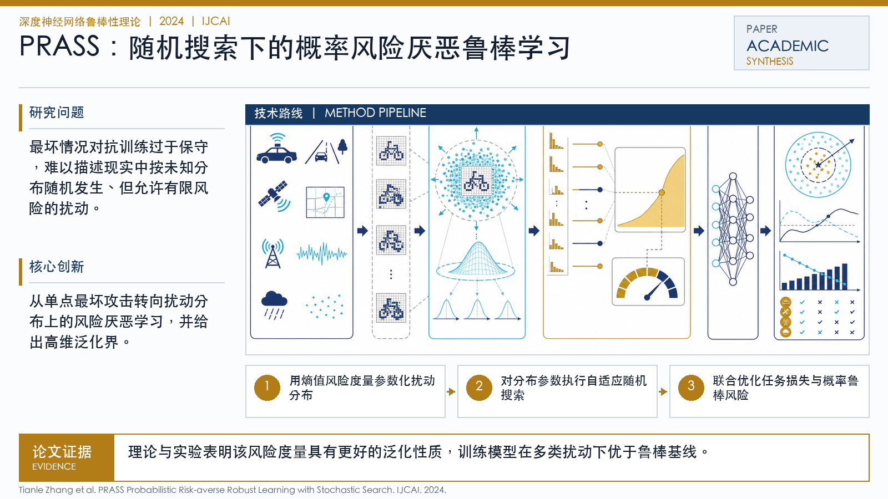

Problem
解决的问题
最坏情况对抗训练过于保守，难以描述现实中按未知分布随机发生、但允许有限风险的扰动。
Robustness Theory of DNNs · 2024 · IJCAI
PRASS Probabilistic Risk-averse Robust Learning with Stochastic Search
Problem
最坏情况对抗训练过于保守，难以描述现实中按未知分布随机发生、但允许有限风险的扰动。
Value
理论与实验表明该风险度量具有更好的泛化性质，训练模型在多类扰动下优于鲁棒基线。
Paper-grounded Academic Summary
该代表页依据原文摘要、贡献段与方法图注生成。方法视觉由 ImageGen 按论文证据逐篇绘制，中文研究问题、技术路线、创新点与实验结论采用确定性排版，以保证内容与字符准确。
打开原文 PDF
Technical Route
Innovation